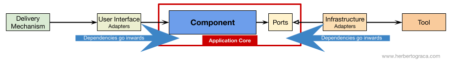

Clean Architecture in Node.js
Sergio Benítez
üí≠ Working With Legacy Projects
Learnings of software architecture and how a front end can do his initial steps in the backend world.
üñºÔ∏è‚Äç The Clean Architecture

Figure 1: Uncle Bob Clean architecture
Reisilent Software
- Independent of Frameworks
- Testable
- Independent of UI
- Independent of Database
- Independent of any external agency
✋ The Clean Architecture my understanding
Fundamental blocks of the system
Figure 2: Fundamental blocks of the system
Flow of control
Figure 3: Flow of control
Tools
Figure 4: Tools
Adapters
Code units that connects the tools to the application core.
Ports
A specification of how the tool can use or used by the application core.
Driver Adapters
Figure 5: Driver Adapters
Driven Adapters
Figure 6: Driven Adapters
Inversion of control
Figure 7: Inversion of control
Application Layer
Figure 8: Inversion of control
Application Services
- Use a repository to find on or several entities;
- Tell those entities to do some domain logic;
- Use the repository to persist entities again, effectively saving the data changes.
Command Handlers
- Contain the actual logic to perform the use case;
- Wire pieces in the architecture receiveing a command or trigerring a logic in the application Service.
Application Event
Represent the outcome of a use case.
Domain Layer
Figure 9: Domain layer
Domain Services
Receive a set of entities and perform business logic on them.
Domain Model
Contains the bussiness objects that represent something in the domain (e.g. entities, value objects, enums, etc.)
Domain Events
They are triggered when a specific set of data changes.
Components
Figure 10: Component
Package by layer
Figure 11: Package by layer
Package by feature
Figure 12: Package by feature
Package by component
Figure 13: Package by component
ü§ì Demo
üìù Recap
Explicit Architecture

Figure 14: Explicit architecture
Dependencies Go Downwards

Figure 15: Dependencies go downwards
ü•° Takeaways
Dependencies go inwards

Figure 16: Dependencies go inwards
Plans are worthless, but planning is everything.
by Eisenhower
The map is not the territory
by Alfred Korzybski
üìé Resources
- MVC Architecture by Jessica Wilkins
- Clean Architecture NodeJS build a REST API by Howie Mann
- DDD, Hexagonal, Onion, Clean, CQRS, … How to put all together, by Herberto Graca